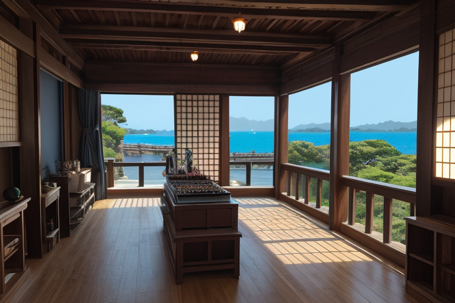
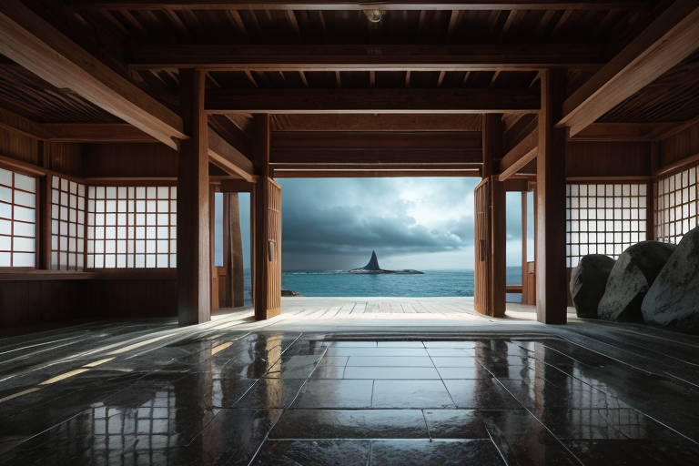
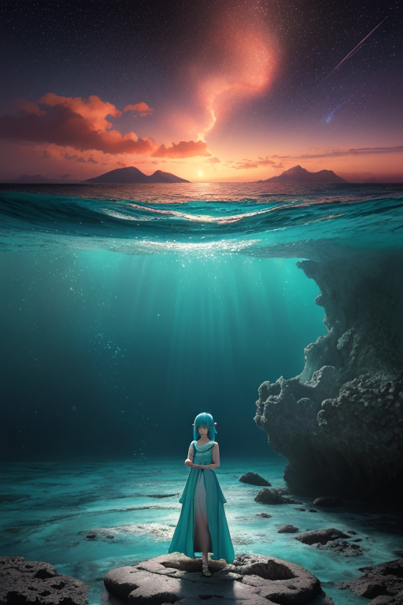
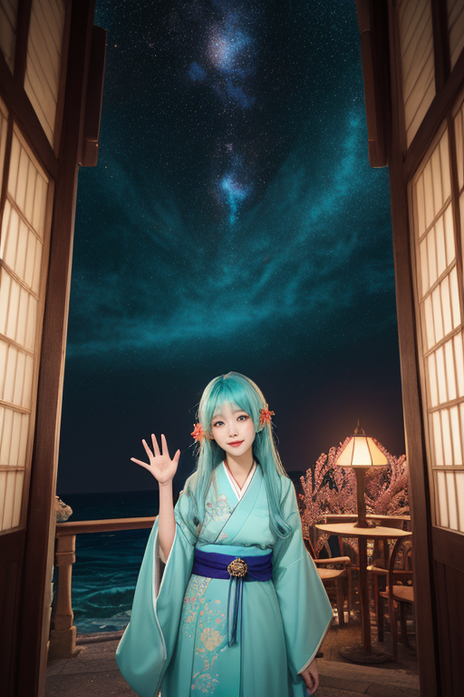

第一章 現実の沖縄
あなたはまだ気づいていない。この土地にも、王がいることを。
首里城の赤瓦は、朝日に照らされて深紅に輝く。それは復元された姿であり、かつて失われたものの記憶でもある。城壁の向こうには、紺碧の海が広がり、その先には見えない境界線が引かれている。ここは、常に内と外の狭間に立つ島だ。
国際通りの喧噪の中にも、三線の音色がかすかに混じる。観光客の笑い声の合間を縫って、古老が泡盛を傾ける店の奥から、歴史の重みのような沈黙が漏れてくる。この通りは、戦後の焼け野原から這い上がった再生の象徴であり、その下にはまだ、消えない記憶の地層が横たわっている。
美ら海水族館の巨大水槽の前で、人々はジンベエザの優雅な遊泳に見とれる。しかし王は知っている。この水槽のガラス越しに見える海そのものが、本土と沖縄、そして異国との、複雑に重なり合う境界であることを。波音は、単なる自然の音ではない。幾重にも折り重なった時間の、かすかなエコーなのだ。
王は、碧と紫の衣をまとって、斎場御嶽の森に佇む。聖域の岩陰から、この島のすべての「あいだ」を見つめている。
第二章 歪みの兆候
国際通りの喧騒は、異なる言語と欲望が交錯する、生きた境界線だった。観光客の笑い声、土産物店の呼び込み、三線の音色。その全てが、この島が背負う「あいだ」の重さを増幅させていた。王、リュウキュリア・エコーは、シーサーの置かれた屋根の上から、人々の流れを静かに見下ろす。彼の耳には、表面の賑わいの下を流れる、深く静かな「ずれ」の音が聞こえていた。本土からの経済の波、異国の文化の流入。それらは目に見えないプレートの圧力のように、島の基層にひずみを蓄えさせていた。
「境界は、常に両側から押されるのです」
主席妖精エコラが、優雅な身振りで波紋を描きながら囁く。彼女の周りには、かすかな紫の光が漂っている。台風の気圧の変化さえ、この文化的・社会的な「ずれ」によって、予測不能な軌道へと引きずられようとしていた。王は目を閉じた。琉球王国が滅び、沖縄戦の焦土を経て、それでも脈々と受け継がれてきたもの。泡盛の樽に込められた時間、御嶽に籠もる祈り。それら記憶の層が、今、外部からの圧力で歪められようとしている。彼は自問した。我々は、この島に、いったい何を継承するのか。

第三章 境界の選択
首里城の再建現場に、鉄骨の軋む音が響く。リュウキュリア・エコーは、その音を、過去から現在へと引き継がれる「ずれ」の響きとして聞いた。本土と沖縄、戦前と戦後、伝統と観光。幾重にも折り重なる境界線が、今、巨大な台風の気圧配置に影響を与えようとしていた。妖精エコラが波の分散を試みるが、文化的な亀裂が生む気象の乱れは、単なる物理現象ではない。
「受け継ぐべきは、形だけではない」と王は呟く。斎場御嶽の石畳を踏みしめる観光客の群れ。彼らの無意識の期待と、聖域の静寂との間に生じる微妙な圧力。ウタキナが懸命にその境界波を保護する。だが、王は迷う。この流入する外部の「波」を完全に防ぐことは、島を孤立させ、記憶を枯渇させる。かといって、無防備に受け入れれば、島の核が溶けてしまう。
彼は、美ら海水族館の黒潮の海を眺めた。外洋と内部を行き来するジンベエザメのように。拒絶も、同化も、真の継承ではない。境界線そのものが、交わりと分別のリズムを生む。王は決断した。全てを受け入れるのではなく、選び、混ざり、しかし決して消えない「何か」を守る調整者となることを。

第四章 妖精との対話
斎場御嶽の最深部、久高島を望む聖域で、王はウタキナと向き合った。岩の隙間を抜ける風が、三線の調べのように哀愁を帯びて響く。
「王よ、あなたは何を受け継ごうとしているのですか」ウタキナの声は、御嶽に満ちる祈りの残響のようだった。「境界は、通過するものの記憶を蓄えます。通り過ぎる波、去りゆく人、消えゆく言葉。全てが層となり、島の地層となるのです」
エコラがそっと近づき、波打ち際のさざなみのように囁いた。「私たちは、外から来るものを『敵』とは見ません。ただ、その衝撃を分散し、島の核が砕けないよう、ほんの少し時間を遅らせるだけ。台風の波が、珊瑚礁によって砕かれるように」
王は黙って聞いた。受け継ぐとは、過去をそのまま抱え込むことではない。海が異なる川の水を混ぜ、なお塩辛さを保つように。戦禍の記憶、消えゆく言葉、変容する習俗――全てを「琉球」という器で受け止め、濾過し、しかし器そのものの形は微調整しながら守り続けること。それが、この海境の王の役目なのだと悟った。

第五章 微調整と余韻
国際通りの雑踏は、異なる言語と期待が混ざり合う海流のようだった。リュウキュリア・エコーは、観光客に混じってゆっくりと歩く。彼の目には、人々の行き交いが「境界」そのものとして映る。外から来る者と、ここに生きる者。その接点で、何かが交わり、何かがすれ違う。彼の役目は、その流れを完全に止めたり、無理に混ぜ合わせたりすることではない。ほんの少し、衝突が優しい邂逅になるよう、理解の断絶が小さな興味に変わるよう、微調整を施すことだ。
三線の音色が路地から漏れる。足を止めた外国人客が、ふと店内を覗く。店主がにっこりと手を振れば、客は躊躇しながらも中へ入っていく。泡盛の杯が傾けられ、拙い日本語と笑顔が交わされる。それは、歴史の大きな傷を癒すものではない。ただ、今この瞬間の境界を、ほんの少し温かなものにしている。
王は、静かに目を細めた。受け継ぐものは、形ある文物だけではない。この、出会いの可能性そのもの。傷ついた記憶を抱えながらも、なお開かれようとするこの島の「間」の感覚。彼はそれを、無理に守ろうとはしない。流れを微かに整え、記憶の器が溢れも空にもならないよう、ただ見守る。
あなたの町にも、王がいる。